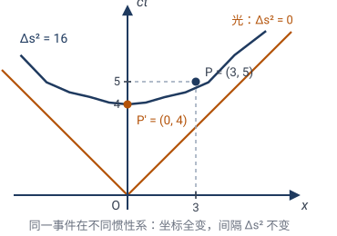

影响与意义：变换思想如何重塑现代世界
克莱因 1872 年的纲领，表面上是几何学内部的一次整理。但"用变换群和不变量来组织一门学科"这套思想，像一粒种子，在接下来 150 年里长成了参天大树，荫蔽了数学和物理学的半个版图。这一章我们走到前沿，看看它结出了什么果。
9.1不变量理论：19 世纪代数的皇冠
"找不变量"一旦被提炼成方法，立刻在代数里引爆了一场运动——不变量理论（invariant theory）。
问题是这样的：给一个多项式（或一组多项式），在某些变换（通常是变量替换 / 线性变换）下，它的哪些组合保持不变？
✏️ 小例子：二次型 $Q=ax^2+bxy+cy^2$。在变量替换 $x,y\to$（线性变换）下，系数 $a,b,c$ 都会变。但判别式 $\Delta=b^2-4ac$ 这个组合几乎不变——它只被乘上替换矩阵行列式的平方（一个正数因子），所以 $\Delta$ 的符号纹丝不动。正是这个符号决定了曲线是椭圆（$\Delta<0$）、抛物线（$\Delta=0$）还是双曲线（$\Delta>0$），而这个分类因此与坐标选法无关。
19 世纪后半叶，凯莱、西尔维斯特、戈尔丹等人狂热地计算各种不变量。戈尔丹证明了"二元型的不变量有限生成"（1870，"不变量之王"）。希尔伯特（David Hilbert, 1862–1943）在 1890 用抽象的存在性论证（而非构造）一举证明了一般情形的不变量有限基定理，宣告了这门学科的成熟——也开创了现代抽象代数的方法论。
💡 不变量理论后来演变为代数几何和代数不变量论，是今天表示论、几何不变量论（Mumford）的祖先。一条从克莱因到今天的清晰血脉。
9.2代数拓扑：把拓扑不变量"代数化"
拓扑（第 7 章层级最右端）丢失了几乎所有度量，只剩"最顽固"的不变量。20 世纪初，庞加莱（Henri Poincaré）提出了一个天才想法：给拓扑空间配上代数对象（群），让拓扑不变量变成代数不变量。这就是代数拓扑。
核心工具——同调群 $H_n(X)$：
- 把空间 $X$ 切成"基本块"（点、边、面、体……）；
- 研究这些块的"边界关系"；
- 算出的群 $H_0,H_1,H_2,\ldots$ 是拓扑不变量（同胚的空间有相同的同调群）。
✏️ **手算 $H_1$（"洞"）**：
- 球面 $S^2$：$H_1=0$（没有一维的洞，球面上一圈都能缩成点）。
- 圆 $S^1$：$H_1=\mathbb{Z}$（一个洞，绕一圈是一圈）。
- 甜甜圈 $T^2$：$H_1=\mathbb{Z}^2$（两个独立的圈：经线圈 + 纬线圈）。
这和第 7 章用欧拉示性数数"洞"是一致的：同调群是更精细的拓扑不变量。
代数拓扑的精神是爱尔兰根纲领的延续：找不变量——只不过这里的"变换"是最广的（同胚），不变量被精巧地编码进代数（群、环）里。今天它已经是数学的语言底座之一。
9.3物理学：对称性决定定律
这才是变换思想最辉煌的跨界。20 世纪物理学最深刻的洞见之一是：
物理定律 = 某个对称群的不变量。
相对论：时空的等距群
爱因斯坦的狭义相对论（1905）说：物理定律在所有惯性系里形式相同。用变换语言说——物理定律在洛伦兹变换群下不变。
洛伦兹变换（匀速运动 + 旋转 + 平移）是闵可夫斯基四维时空的"等距变换"。牛顿力学用的是伽利略变换群，相对论换成洛伦兹群——换变换群，就是换物理。
💡 克莱因的胜利：相对论把"几何 = 变换群 + 不变量"从空间推广到时空。时空有哪种等距群，就有什么样的几何（欧氏 / 闵氏 / 黎曼）。爱因斯坦后来用黎曼几何（广义相对论，1915）描述引力，本质仍是"找时空对称性"。
✏️ 不变量叫"时空间隔"。 洛伦兹群下到底什么不变？不是空间距离，也不是时间间隔——而是带减号的"间隔"
那个减号，就是闵可夫斯基时空和欧氏空间的唯一区别（欧氏是四个 $+$）。手算感受一下：一束光从原点出发，$1$ 秒走 $c$ 米，事件 $(t,x)=(1,c)$ 的间隔 $\Delta s^2=c^2-c^2=0$。换一个高速运动的惯性系，$(t,x)$ 的数值都变了，但 $\Delta s^2$ **还是 $0$。"光速不变"本质上就是"光的间隔 $\Delta s^2=0$ 在洛伦兹群下不变"**——克莱因模板里那个"不变量"，在物理学里就是光速不变原理。

诺特定理：对称 ↔ 守恒
埃米·诺特（Emmy Noether, 1882–1935）在 1915 证明了一个定理，被誉为"物理学最美的定理"：
每一种连续对称性，对应一个守恒律。
| 对称性（变换群） | 守恒量 |
|---|---|
| 时间平移（物理定律今天和明天一样） | 能量守恒 |
| 空间平移（这里和那里一样） | 动量守恒 |
| 空间旋转（朝哪个方向都一样） | 角动量守恒 |
| U(1) 规范对称 | 电荷守恒 |
✏️ 直觉与证明思路：诺特定理的逻辑链是——对称（系统在某连续变换下不变）$\Longrightarrow$ 不依赖某变量（如时间平移不变 $\Leftrightarrow$ 规律不显含时间）$\Longrightarrow$ 共轭量守恒（与时间共轭的量是能量，故能量守恒）。
一个一维例子（只需记住"导数为零即守恒"）：用拉氏量 $L(q,\dot q)$ 描写系统，运动方程是
若系统有空间平移对称，则 $L$ 不显含 $q$（$\partial L/\partial q=0$），上式变成
即动量 $p$ 守恒。同理，时间平移对称（$L$ 不显含 $t$）$\Longrightarrow$ 能量守恒。
严格的诺特定理用变分法（对作用量 $S=\int L\,dt$ 施加连续变换并令变分为零），但核心就是这一行：对称让某个导数为零，零导数就是守恒。守恒律由此从“经验规律”升级为“对称性的必然推论”。
💡 延伸专题：诺特是谁？一位半生没有正式教职、被性别与种族门槛挡在门外的女数学家，如何给出“物理学最美的定理”，又如何单枪匹马重塑了抽象代数。见 诺特：对称即守恒。
规范对称与标准模型
20 世纪后半叶，物理学家发现基本粒子也能用对称群分类。粒子物理标准模型的整个结构，由一个规范对称群决定：
- $\mathrm{U}(1)$：电磁相互作用；
- $\mathrm{SU}(2)$：弱相互作用；
- $\mathrm{SU}(3)$：强相互作用。
每一种基本力 = 一个规范对称群。 粒子是群的"表示"，力的传递（光子、W/Z 玻色子、胶子）由对称性决定。杨振宁-米尔斯的规范场论（1954）把这套数学发扬光大。
💡 这是爱尔兰根纲领最壮丽的回响：1872 年克莱因说"几何 = 群 + 不变量"，1970 年代的物理学家发现"基本力 = 规范群 + 不变量"。 同一个思想，横跨百年，从几何走到物质最底层。
9.4计算机视觉与图形学：找"不变特征"
在工程世界里，变换思想直接落地为算法。
计算机视觉：不变特征
识别一张图里有没有猫，不管猫旋转了、缩放了、视角变了——你要找的是"猫"的不变特征。
- SIFT 特征（Scale-Invariant Feature Transform）：刻意设计成尺度 + 旋转不变的关键点描述。
- 灭点校正（第 5 章交比的工程版）：从一张 2D 照片恢复 3D 结构，靠的就是"射影不变量"。
- 等变神经网络（equivariant CNN）：让神经网络内在地"懂"对称——输入旋转，输出跟着旋转。这把群的对称性烧进网络结构，大幅提升数据效率。
计算机图形学
- 仿射变换是图形渲染的基石：物体的平移、旋转、缩放、斜切，全是仿射。
- 纹理映射、3D 投影到 2D 屏幕，本质是射影变换。
- 游戏、CAD、动画——每一帧画面背后都是变换矩阵的连乘。
💡 工程上的"变换"不再是哲学，是每秒上亿次的矩阵乘法。但它的灵魂，还是克莱因那句话——关心的是变换下不变的东西。
9.5化学与材料：对称群分类物质
- 分子对称性：水分子的对称群是 $C_{2v}$（4 元），甲烷是 $T_d$（24 元），苯是 $D_{6h}$（24 元）。对称群决定分子的光谱性质（哪些振动模式是红外活性的）——这是群表示论在化学的直接应用。
- 晶体分类：第 8 章的 230 种空间群，是固体物理和材料科学的骨架。一种晶体的对称群决定它的电学、光学、弹性性质。
9.6数学的统一：克莱因的遗产
回到数学本身。爱尔兰根纲领的遗产，是用"结构"（群、不变量）而非"对象"来组织数学：
- 代数用群研究方程（伽罗瓦）；
- 几何用群研究空间（克莱因）；
- 拓扑用群研究形状（庞加莱同调）；
- 物理用群研究定律（诺特、规范场）。
群，成了贯穿整个数学和理论物理的通用语言。 而这一切的源头之一，是一个 23 岁年轻人在 1872 年的观察：几何不是关于图形的，而是关于图形在变换下什么不变的。
9.7全书总结：四句话
如果整本书要压缩成四句话：
- 几何换了一副眼镜：从"静态地看图形"转为"动态地看图形在变换下如何变化"。
- 每种几何对应一种变换群：等距→欧氏，相似→相似几何，仿射→仿射几何，射影→射影几何，同胚→拓扑。
- 几何性质 = 变换不变量：群越大，不变量越少，结论越普适。
- "找不变量"是通用智慧：它从几何出发，征服了代数（不变量理论）、拓扑（同调）、物理（守恒律、规范场）、工程（不变特征）。
✏️ 最后一句：下次你看到一个"对称"的图案、一个"守恒"的物理量、一个"鲁棒"的特征——记住，它们背后都是同一个百年前的洞见：盯住变化中不变的东西。 这就是从变换看几何留给世界的礼物。
🧩 本章习题（开放讨论）
物理题 9.1 诺特定理
一个自由下落的系统，"时间反演"（$t\to -t$）是不是它的对称？它对应哪个守恒律？
查看解答 / 提示
讨论：自由下落在时间反演下不变（落体运动倒过来放仍是一段合法运动），所以时间反演是它的对称。但它不对应任何守恒律——时间反演是离散对称（只做一次、没有"参数"），而诺特定理只对连续对称（带连续参数的变换族，如"平移任意 $t_0$ 秒"）发言。真正对应守恒律的是时间平移对称（规律不显含时刻）$\to$ 能量守恒。这道题的关键教训：别把"对称"和"诺特守恒律"自动挂钩——只有连续对称才有守恒量。
视觉题 9.2 不变特征
设计一个"平移 + 旋转 + 缩放"都不变的图像特征。提示：先对图像做某种"规范化"（如把质心移到原点、主轴对齐），再提取特征。
查看解答 / 提示
讨论：这是 SIFT、矩不变量等算法的核心思路——先把变换"消除掉"，再在规范化的对象上提取特征。
思考题 9.3 化学与对称
为什么水分子（$H_2O$，对称群 $C_{2v}$，4 元）和过氧化氢分子（$H_2O_2$，对称性更低）的红外光谱"峰"的数量不同？
查看解答 / 提示
讨论：对称性越高的分子，越多振动模式因对称而"简并"或"禁戒"，谱峰越少。对称群的结构，直接编码在光谱里。
总结题 9.4 回到引子
重读第 1 章那道"哪个三角形是同一个"的题。现在用变换几何的语言重新回答：什么叫"同一个"？
查看解答 / 提示
答：两个图形"同一个"（在某种几何里），当且仅当存在该几何的变换群里的一个变换，把一个映成另一个。"同一个"是相对于变换群的概念——同一对图形，在欧氏里可能"不同"（不全等），在拓扑里可能"相同"（同胚）。"相同"不是绝对的，是相对于你选的对称标准的。
📚 延伸：变换思想的跨学科应用题（时空间隔不变、诺特对称↔守恒配对、同调群数洞、判别式分类曲线、设计不变特征，共 5 道），见 09-影响与意义-习题.md。它们把"盯住变化中不变的东西"这套思想从几何带到物理、拓扑、代数、工程。
🎓 结语：从欧几里得的静止图形，到克莱因的运动眼光，再到诺特的对称守恒——人类花了 2200 年，才看清"几何是关于变换的"。这套思维一旦掌握，你看世界的眼光就变了：不再问"这个东西是什么"，而问"它在变化中守住了什么"。这就是数学给的最深刻的礼物之一。
📖 返回 README / 目录